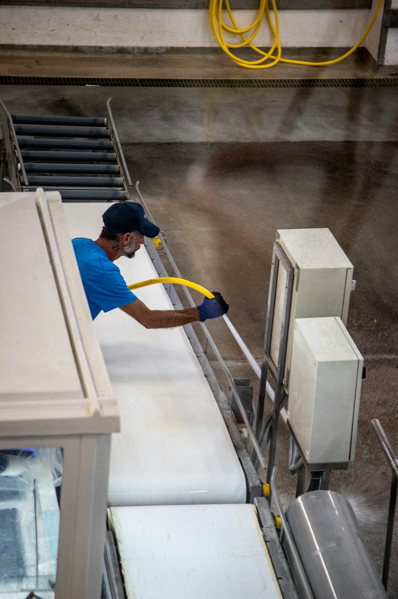

Industrie- und Hallenreinigung im Schwarzwald
Wir reinigen Produktionshallen, Lager, Werkstätten und Maschinen mit Industrietechnik und richten uns dabei nach Ihren Schichtzeiten und Sicherheitsregeln.
- Einsatz in Pausen und Stillständen
- Scheuersaugmaschinen und Hochdrucktechnik
- Nach Ihren Sicherheitsregeln
- Kostenlose Besichtigung vor Ort

- Besichtigung kostenlos
- Antwort innerhalb von 24 Stunden
- Schriftliches Angebot mit Festpreis
- Deutsch, Türkçe, English
Warum saubere Hallen mehr sind als Optik
In Produktion und Lager sammeln sich Späne, Öl, Staub und Reifenabrieb schneller, als es im laufenden Betrieb auffällt. Verschmutzte Böden werden rutschig, Staub setzt sich auf Maschinen und Regalen ab, und Schmutz aus der Halle wandert in Pausenräume und Sanitärbereiche. Regelmäßige Reinigung senkt das Unfallrisiko, schont Anlagen und hinterlässt bei Kunden und Auditoren einen guten Eindruck.
Wir arbeiten mit Scheuersaugmaschinen, Kehrmaschinen, Industriesaugern und Hochdruckreinigern. Vor dem ersten Einsatz nehmen unsere Mitarbeiter an Ihrer Sicherheitsunterweisung teil, tragen die vorgeschriebene Schutzausrüstung und reinigen Maschinen nur nach Abschaltung und Freigabe durch Ihr Personal. Die Sicherheitsdatenblätter unserer Reinigungsmittel stellen wir Ihnen auf Wunsch zur Verfügung.
Ob Maschinenbaubetrieb in Villingen-Schwenningen, Logistikhalle in Offenburg oder Werkstatt in Rottweil: Wir reinigen in Schichtpausen, am Wochenende oder während Betriebsferien und Revision, wenn die Anlagen stillstehen. So stören wir Ihre Produktion so wenig wie möglich, und Sie haben einen festen Ansprechpartner, der Ihre Halle und Ihre Abläufe kennt.
Unser Leistungsumfang
Hallenböden maschinell reinigen
Kehren und Nassreinigen von Produktions- und Lagerflächen mit Scheuersaugmaschinen, auch bei Öl- und Fettverschmutzung.
Maschinen und Anlagen
Außenflächen, Verkleidungen und Umfeld von Maschinen nach Abschaltung und Freigabe durch Ihr Personal reinigen.
Reinigung mit Hochdruck
Hartnäckige Verschmutzung an Rampen, Behältern, Gitterboxen und Außenflächen mit Hochdruck lösen, wo Wasser erlaubt ist.
Regale und Lagertechnik
Staub von Regalen, Fördertechnik und Lagerflächen entfernen, abgestimmt auf Ihre Ein- und Auslagerung.
Werkstätten und Nebenflächen
Werkstätten, Technikräume, Ladezonen und Treppen so reinigen, dass Wege frei und Böden trittsicher bleiben.
Sozialräume und Kantinen
Pausenräume, Umkleiden und Kantinen täglich oder im vereinbarten Rhythmus gründlich und hygienisch reinigen.
Sanitär und Duschen
Toiletten, Waschräume und Duschen reinigen und Verbrauchsmaterial wie Seife und Papier nach Absprache auffüllen.
Stillstand und Revision
Grundreinigung von Hallen und Anlagen während Betriebsferien oder Revision, wenn die Produktion ruht.
Für wen wir Industrie- und Hallenreinigung übernehmen
- Maschinenbau und Metallverarbeitung
- Produktionsbetriebe im Schichtbetrieb
- Logistik- und Lagerbetriebe
- Kfz- und Handwerkswerkstätten
- Holz- und Kunststoffverarbeitung
- Gewerbeparks und Hallenvermieter
So läuft es ab
Anfrage starten- 1
Begehung
Wir sehen uns Halle, Anlagen und Abläufe mit Ihnen an und klären Sicherheitsregeln und Zeitfenster.
- 2
Leistungsverzeichnis
Sie erhalten ein schriftliches Leistungsverzeichnis mit Flächen, Turnus und Festpreis oder Stundensatz.
- 3
Unterweisung
Unsere Mitarbeiter erhalten vor dem ersten Einsatz Ihre Sicherheitsunterweisung, danach reinigen wir nach festem Plan.
- 4
Abnahme
Nach jedem größeren Einsatz gehen wir die Flächen mit Ihnen ab und dokumentieren das Ergebnis.
Was kostet eine Industrie- oder Hallenreinigung?
Der Preis hängt von Flächen, Verschmutzung und Einsatzzeiten ab. Nach der Begehung erhalten Sie ein schriftliches Angebot mit Festpreis oder Stundensatz.
Für Betriebe mit mehreren Standorten erstellen wir gern ein Rahmenangebot.
Festpreis anfragen- Fläche und Zugänglichkeit
- Freie Hallenflächen reinigt die Maschine schnell, enge Gänge und verstellte Bereiche brauchen mehr Handarbeit.
- Art der Verschmutzung
- Öl, Späne oder Feinstaub verlangen andere Technik und Mittel als normaler Lagerstaub.
- Turnus und Umfang
- Eine regelmäßige Reinigung kalkulieren wir anders als einen einmaligen Großeinsatz während der Revision.
- Zeitfenster und Termine
- Arbeit am Wochenende, in kurzen Schichtpausen oder zu festen Stillstandszeiten fließt in die Kalkulation ein.
Im ganzen Schwarzwald für Sie da
Wir übernehmen Industrie- und Hallenreinigungen im gesamten Schwarzwald, unter anderem in Offenburg, Lahr, Villingen-Schwenningen, Rottweil, Schramberg, Donaueschingen und Pforzheim.
Häufige Fragen
Können Sie während des laufenden Betriebs reinigen?
Ja, in vielen Bereichen. Flächen nahe an laufenden Maschinen reinigen wir in Schichtpausen, am Wochenende oder nach Absprache abschnittsweise, damit niemand gefährdet wird.
Reinigen Sie auch Maschinen?
Wir reinigen Außenflächen, Verkleidungen und das Umfeld von Maschinen. Gearbeitet wird nur nach Abschaltung und Freigabe durch Ihr Personal, Eingriffe in die Technik übernehmen wir nicht.
Wie läuft die Sicherheitsunterweisung ab?
Vor dem ersten Einsatz weisen Sie oder Ihre Fachkraft für Arbeitssicherheit unser Team in Gefahren, Wege und Regeln Ihres Betriebs ein. Wir halten uns an Ihre Vorgaben zu Schutzausrüstung, Zutritt und Fahrwegen.
Arbeiten Sie auch während Betriebsferien oder Revision?
Ja. Gerade dann lassen sich Hallen und Anlagen gründlich reinigen, weil die Produktion ruht. Sprechen Sie uns früh an, damit wir die Termine fest einplanen können.
Welche Maschinen setzen Sie ein?
Je nach Fläche Scheuersaugmaschinen, Kehrmaschinen, Industriesauger und Hochdruckreiniger. Geräte und Reinigungsmittel bringen wir selbst mit, Sicherheitsdatenblätter erhalten Sie auf Wunsch.
Übernehmen Sie auch Sozialräume und Sanitärbereiche?
Ja. Pausenräume, Kantinen, Umkleiden und Sanitäranlagen reinigen wir auf Wunsch im selben Vertrag, mit einem festen Ansprechpartner für alle Bereiche.
Passende Leistungen

Bodenreinigung und Bodenpflege
Wir reinigen und pflegen Ihre Böden maschinell und wählen Verfahren und Mittel passend zum Belag, damit er sauber, geschützt und lange schön bleibt.
Mehr erfahren
Unterhaltsreinigung
Wir halten Büros, Praxen, Kanzleien und Ladenflächen dauerhaft sauber, nach einem festen Reinigungsplan und zu Zeiten, in denen Ihr Betrieb nicht gestört wird.
Mehr erfahren
Winterdienst und Außenanlagen
Wir räumen und streuen Gehwege, Zufahrten und Parkplätze, dokumentieren jeden Einsatz und kümmern uns in der warmen Jahreszeit um Ihre Außenanlagen.
Mehr erfahrenSagen Sie uns, was sauber werden soll.
Beschreiben Sie kurz Objekt und Leistung. Wir melden uns innerhalb von 24 Stunden mit einem Terminvorschlag.
- Telefon und WhatsApp
- +49 162 9763733
- Erreichbar
- Montag bis Samstag, 7 bis 19 Uhr
- Einsatzgebiet
- Schwarzwald und Umgebung